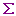

Knoten einfügen ( neu
)
neu
)
Ein Knoten wird eingefügt und der Eigenschaftsdialog
öffnet sich, wo die Koordinaten eingegeben werden können.
Die z-Koordinate zeigt nach unten.
Der Knoten bleibt selektiert.
Falls man ihn an falscher Stelle eingegeben hat, kann man durch
drücken der rechten Maustaste den Eigenschaftsdialog wieder
öffnen.
Stäbe einfügen (neu
)
Um einen Stab einzufügen, auf dem ersten Knoten die linke
Maustaste drücken und gedrückt halten. Wenn sich der
Mauszeiger über dem zweiten Knoten befindet und dieser gelb
markiert ist, die Taste loslassen. Der neu eingefügte Stab
bleibt selektiert.
Lager und Lasten einfügen
- Knoten selektieren
( ).
Wenn der Knoten gelb aufleuchtet, die linke Maustaste drücken.
Der Knoten bleibt nun markiert.
).
Wenn der Knoten gelb aufleuchtet, die linke Maustaste drücken.
Der Knoten bleibt nun markiert.
- Eigenschaftsdialog öffnen
durch drücken der rechten Maustaste. Im Dialog können die
Lagerbedingungen und Lasten eingegeben werden.
Berechnen ()
Berechnete
Stäbe werden dick gezeichnet. Grün sind solche mit Druck,
schwarz solche mit Zug.
Durch Einblenden des Layers
 werden die berechneten Lagerkräfte als Pfeile sichtbar. Bewegt
man nun den Mauszeiger zu einem gelagerten Knoten, wird dieser gelb
markiert und in der Statuszeile kann man die Kräfte ablesen.
werden die berechneten Lagerkräfte als Pfeile sichtbar. Bewegt
man nun den Mauszeiger zu einem gelagerten Knoten, wird dieser gelb
markiert und in der Statuszeile kann man die Kräfte ablesen.
Stabkräfte setzen
Handelt es sich um ein
statisch unbestimmtes System, sind jetzt noch nicht alle Stäbe
bestimmt.
- Stab selektierten ().
Wenn der Stab aufleuchtet, die linke Maustaste drücken. Der
Stab bleibt nun markiert.
- Eigenschaftsdialog öffnen durch
drücken der rechten Maustaste. Einen Stabkraft kann nun
vorgeben werden, z.B. die Fliesskraft einer Anzahl Armierungseisen.
Berechnen ()
Speichern
Drucken System
Auf dem Ausdruck die Modellierung
(Koordinaten, Lasten) überprüfen.